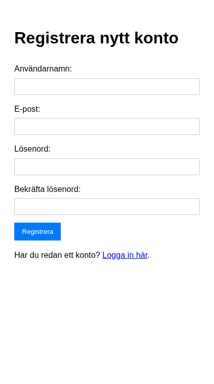
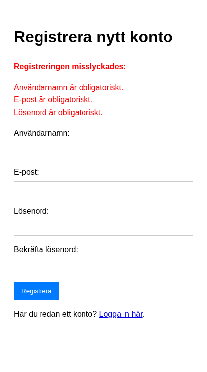
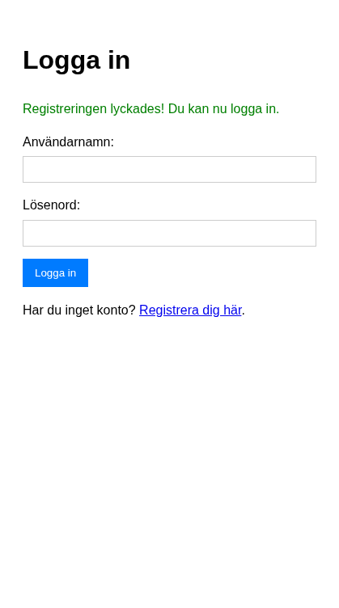

Del 2: Autentisering
I denna del skapar vi registrering, inloggning, sessionshantering och logout – steg för steg. Förutsättning: Du har genomfört Del 1: Setup och databas.
Vi bygger varje del inkrementellt: först en enkel version som fungerar, sedan lägger vi till mer funktionalitet.
Mini-exempel: Varför hasha lösenord?
Innan vi bygger registrering – förstå varför vi aldrig sparar lösenord i klartext. Skapa tillfälligt test_hash.php:
<?php
$password = "mitt_lösenord";
echo "Hash 1: " . password_hash($password, PASSWORD_DEFAULT) . "\n";
echo "Hash 2: " . password_hash($password, PASSWORD_DEFAULT) . "\n"; // Kör igen – olika resultat!
$hash = password_hash($password, PASSWORD_DEFAULT);
echo "Verifierar: " . (password_verify($password, $hash) ? "OK" : "Fel") . "\n";
?>
Du ska aldrig spara lösenord i klartext. password_hash() skapar en unik sträng varje gång (p.g.a. salt). password_verify() kollar om lösenordet stämmer mot hashen – använd den vid inloggning, aldrig == mellan hashar.
Mini-exempel: Varför prepared statements?
Farligt (aldrig gör så här):
$username = $_POST['username']; // Tänk om någon skriver: admin' OR '1'='1
$pdo->query("SELECT * FROM users WHERE username = '$username'"); // SQL-injektion!
En angripare kan skicka admin' OR '1'='1 som användarnamn. Då blir SQL-frågan WHERE username = 'admin' OR '1'='1' – vilket alltid är sant. Angriparen loggar in som första användaren.
Säkert: Prepared statements skickar data separat från SQL-kommandot. Databasen vet att :username är data, inte kod. Därför använder vi prepare(), bindParam() och execute() i stället för att sätta in variabler direkt i SQL-strängen.
Steg 1: Registrering – minimal version
Börja med det enklaste som behövs för att få registrering att fungera: ett formulär som sparar användare i databasen.
Steg 1.1: Skapa formuläret
Skapa filen register.php med endast HTML-formuläret. Inga fält är validerade än – vi fokuserar på strukturen.
<?php
require_once 'includes/config.php';
require_once 'includes/database.php';
$errors = [];
$username = '';
$email = '';
// POST-hantering kommer i nästa steg
?>
<!DOCTYPE html>
<html lang="sv">
<head>
<meta charset="UTF-8">
<meta name="viewport" content="width=device-width, initial-scale=1.0">
<title>Registrera dig - Enkel Blogg</title>
<style>
body { font-family: sans-serif; line-height: 1.6; padding: 20px; }
.form-group { margin-bottom: 15px; }
label { display: block; margin-bottom: 5px; }
input[type="text"], input[type="email"], input[type="password"] {
width: 100%; padding: 8px; border: 1px solid #ccc; box-sizing: border-box;
}
button { padding: 10px 15px; background-color: #007bff; color: white; border: none; cursor: pointer; }
button:hover { background-color: #0056b3; }
.error-messages { color: red; margin-bottom: 15px; }
.error-messages ul { list-style: none; padding: 0; }
</style>
</head>
<body>
<h1>Registrera nytt konto</h1>
<form action="register.php" method="post">
<div class="form-group">
<label for="username">Användarnamn:</label>
<input type="text" id="username" name="username" value="<?php echo htmlspecialchars($username); ?>">
</div>
<div class="form-group">
<label for="email">E-post:</label>
<input type="email" id="email" name="email" value="<?php echo htmlspecialchars($email); ?>">
</div>
<div class="form-group">
<label for="password">Lösenord:</label>
<input type="password" id="password" name="password">
</div>
<div class="form-group">
<label for="confirm_password">Bekräfta lösenord:</label>
<input type="password" id="confirm_password" name="confirm_password">
</div>
<button type="submit">Registrera</button>
</form>
<p>Har du redan ett konto? <a href="login.php">Logga in här</a>.</p>
</body>
</html>
Testa att ladda sidan. Formuläret visas, men skickar ännu ingen data till databasen.

Steg 1.2: Lägg till POST-hantering
Nytt i detta steg: Att kolla $_SERVER['REQUEST_METHOD'], hämta data från $_POST, och använda prepared statements för INSERT.
Lägg till följande kod efter raderna med $errors, $username, $email och före ?>:
// Hantera formulärdata när det skickas (POST request)
if ($_SERVER['REQUEST_METHOD'] === 'POST') {
$username = trim($_POST['username'] ?? '');
$email = trim($_POST['email'] ?? '');
$password = $_POST['password'] ?? '';
$confirm_password = $_POST['confirm_password'] ?? '';
// Validering kommer i nästa steg – för nu försöker vi bara spara
if (true) { // Tillfälligt – vi byter ut detta mot validering senare
try {
$pdo = connect_db();
// VIKTIGT: Hasha lösenordet – lagra ALDRIG lösenord i klartext!
$password_hash = password_hash($password, PASSWORD_DEFAULT);
$stmt = $pdo->prepare("INSERT INTO users (username, email, password_hash) VALUES (:username, :email, :password_hash)");
$stmt->bindParam(':username', $username);
$stmt->bindParam(':email', $email);
$stmt->bindParam(':password_hash', $password_hash);
if ($stmt->execute()) {
header('Location: login.php?registered=success');
exit;
} else {
$errors[] = 'Ett fel uppstod vid registrering. Försök igen.';
}
} catch (PDOException $e) {
error_log("Registration Error: " . $e->getMessage());
$errors[] = 'Databasfel. Kan inte registrera användare just nu.';
}
}
}
Förklaring: password_hash() med PASSWORD_DEFAULT skapar en säker hash. Varje anrop ger en unik hash även för samma lösenord (p.g.a. salt). Prepared statements med bindParam skyddar mot SQL-injektion.
Testa att registrera en användare. Du ska omdirigeras till login.php (som ännu inte finns – det är okej).
Steg 2: Lägg till validering
Nu när grundregistrering fungerar lägger vi till validering för att fånga fel innan de når databasen.
Försök själv
Innan du tittar på lösningen: Vilka saker bör vi kontrollera innan vi sparar en ny användare? Tänk på tomma fält, e-postformat, lösenordslängd och att lösenorden matchar.
Valideringslogiken
Ersätt den tillfälliga if (true)-villkoret med riktig validering. Hela POST-blocket ska se ut så här:
if ($_SERVER['REQUEST_METHOD'] === 'POST') {
$username = trim($_POST['username'] ?? '');
$email = trim($_POST['email'] ?? '');
$password = $_POST['password'] ?? '';
$confirm_password = $_POST['confirm_password'] ?? '';
// Validering
if (empty($username)) {
$errors[] = 'Användarnamn är obligatoriskt.';
}
if (empty($email)) {
$errors[] = 'E-post är obligatoriskt.';
} elseif (!filter_var($email, FILTER_VALIDATE_EMAIL)) {
$errors[] = 'Ogiltig e-postadress.';
}
if (empty($password)) {
$errors[] = 'Lösenord är obligatoriskt.';
} elseif (strlen($password) < 6) {
$errors[] = 'Lösenordet måste vara minst 6 tecken långt.';
}
if ($password !== $confirm_password) {
$errors[] = 'Lösenorden matchar inte.';
}
if (empty($errors)) {
try {
$pdo = connect_db();
// Kolla om användarnamn eller e-post redan finns
$stmt_check = $pdo->prepare("SELECT id FROM users WHERE username = :username OR email = :email");
$stmt_check->bindParam(':username', $username);
$stmt_check->bindParam(':email', $email);
$stmt_check->execute();
if ($stmt_check->fetch()) {
$errors[] = 'Användarnamn eller e-postadress är redan registrerad.';
} else {
$password_hash = password_hash($password, PASSWORD_DEFAULT);
$stmt_insert = $pdo->prepare("INSERT INTO users (username, email, password_hash) VALUES (:username, :email, :password_hash)");
$stmt_insert->bindParam(':username', $username);
$stmt_insert->bindParam(':email', $email);
$stmt_insert->bindParam(':password_hash', $password_hash);
if ($stmt_insert->execute()) {
header('Location: login.php?registered=success');
exit;
} else {
$errors[] = 'Ett fel uppstod vid registrering. Försök igen.';
}
}
} catch (PDOException $e) {
error_log("Registration Error: " . $e->getMessage());
$errors[] = 'Databasfel. Kan inte registrera användare just nu.';
}
}
}
Visa felmeddelanden i formuläret
Lägg till detta ovanför <form>-taggen i HTML-delen:
<?php if (!empty($errors)): ?>
<div class="error-messages">
<strong>Registreringen misslyckades:</strong>
<ul>
<?php foreach ($errors as $error): ?>
<li><?php echo htmlspecialchars($error); ?></li>
<?php endforeach; ?>
</ul>
</div>
<?php endif; ?>
Lägg också till required och minlength="6" på lösenordsfälten i formuläret för extra skydd i webbläsaren.

Du har nu lärt dig: Validering med empty(), filter_var() och strlen(), att kolla dubbletter i databasen med prepared statements, och att visa fel med htmlspecialchars() för att undvika XSS.
Steg 3: Inloggning (login.php)
Nu skapar vi inloggningssidan. Flödet: formulär → hämta användare från databasen → verifiera lösenord → spara i session → omdirigera.
Steg 3.1: Formulär och POST-hantering
Skapa login.php med formulär och grundläggande POST-logik:
<?php
require_once 'includes/config.php';
require_once 'includes/database.php';
$errors = [];
$username = '';
$registration_success = isset($_GET['registered']) && $_GET['registered'] === 'success';
if ($_SERVER['REQUEST_METHOD'] === 'POST') {
$username = trim($_POST['username'] ?? '');
$password = $_POST['password'] ?? '';
if (empty($username)) {
$errors[] = 'Användarnamn är obligatoriskt.';
}
if (empty($password)) {
$errors[] = 'Lösenord är obligatoriskt.';
}
if (empty($errors)) {
try {
$pdo = connect_db();
$stmt = $pdo->prepare("SELECT id, username, password_hash FROM users WHERE username = :username");
$stmt->bindParam(':username', $username);
$stmt->execute();
$user = $stmt->fetch();
// Verifiera lösenord – nästa steg!
if ($user && password_verify($password, $user['password_hash'])) {
// Inloggning lyckades – session kommer i nästa steg
header('Location: admin/index.php');
exit;
} else {
$errors[] = 'Felaktigt användarnamn eller lösenord.';
}
} catch (PDOException $e) {
error_log("Login Error: " . $e->getMessage());
$errors[] = 'Databasfel. Kan inte logga in just nu.';
}
}
}
?>
<!DOCTYPE html>
<html lang="sv">
<head>
<meta charset="UTF-8">
<meta name="viewport" content="width=device-width, initial-scale=1.0">
<title>Logga in - Enkel Blogg</title>
<style>
body { font-family: sans-serif; line-height: 1.6; padding: 20px; }
.form-group { margin-bottom: 15px; }
label { display: block; margin-bottom: 5px; }
input[type="text"], input[type="password"] {
width: 100%; padding: 8px; border: 1px solid #ccc; box-sizing: border-box;
}
button { padding: 10px 15px; background-color: #007bff; color: white; border: none; cursor: pointer; }
button:hover { background-color: #0056b3; }
.error-messages { color: red; margin-bottom: 15px; }
.error-messages ul { list-style: none; padding: 0; }
.success-message { color: green; margin-bottom: 15px; }
</style>
</head>
<body>
<h1>Logga in</h1>
<?php if ($registration_success): ?>
<p class="success-message">Registreringen lyckades! Du kan nu logga in.</p>
<?php endif; ?>
<?php if (!empty($errors)): ?>
<div class="error-messages">
<strong>Inloggningen misslyckades:</strong>
<ul>
<?php foreach ($errors as $error): ?>
<li><?php echo htmlspecialchars($error); ?></li>
<?php endforeach; ?>
</ul>
</div>
<?php endif; ?>
<form action="login.php" method="post">
<div class="form-group">
<label for="username">Användarnamn:</label>
<input type="text" id="username" name="username" value="<?php echo htmlspecialchars($username); ?>" required>
</div>
<div class="form-group">
<label for="password">Lösenord:</label>
<input type="password" id="password" name="password" required>
</div>
<button type="submit">Logga in</button>
</form>
<p>Har du inget konto? <a href="register.php">Registrera dig här</a>.</p>
</body>
</html>
Viktigt: Använd password_verify($password, $user['password_hash']) – aldrig jämför hashar direkt. password_verify hanterar salt och algoritm automatiskt.


Steg 4: Sessioner – spara inloggning och skydda sidor
När användaren loggar in måste vi komma ihåg det på andra sidor. Det gör vi med sessioner.
Hur sessioner fungerar (kort)
session_start()– Startar eller återupptar en session (görs redan iconfig.php).$_SESSION– En array där vi lagrar data som ska finnas kvar mellan sidladdningar (t.ex.user_id).- Session-cookie – PHP skickar ett session-ID till webbläsaren. Vid varje ny förfrågan skickas ID:t tillbaka så PHP vet vilken session som gäller.
Steg 4.1: Spara användardata vid inloggning
I login.php, ersätt raden header('Location: admin/index.php'); med följande innan omdirigeringen:
if ($user && password_verify($password, $user['password_hash'])) {
session_regenerate_id(true); // Säkerhetsåtgärd mot session fixation
$_SESSION['user_id'] = $user['id'];
$_SESSION['username'] = $user['username'];
header('Location: admin/index.php');
exit;
}
Nu sparas användarens ID och användarnamn i sessionen när de loggar in.
Steg 4.2: Skydda admin-sidor
Admin-sidorna finns inte än, men vi kan förbereda skyddet. I början av varje fil i admin/ (t.ex. admin/index.php, admin/create_post.php) lägger du till:
<?php
require_once '../includes/config.php';
if (!isset($_SESSION['user_id'])) {
header('Location: ../login.php?redirect=' . urlencode($_SERVER['REQUEST_URI']));
exit;
}
$logged_in_user_id = $_SESSION['user_id'];
$logged_in_username = $_SESSION['username']; // För att visa "Inloggad som ..."
require_once '../includes/database.php';
// ... resten av sidans kod
?>
Skapa admin/index.php med session-skyddet och en minimal sida:
<?php
require_once '../includes/config.php';
if (!isset($_SESSION['user_id'])) {
header('Location: ../login.php?redirect=' . urlencode($_SERVER['REQUEST_URI']));
exit;
}
$logged_in_user_id = $_SESSION['user_id'];
$logged_in_username = $_SESSION['username'];
require_once '../includes/database.php';
?>
<!DOCTYPE html>
<html lang="sv">
<head>
<meta charset="UTF-8">
<title>Admin - Enkel Blogg</title>
</head>
<body>
<h1>Admin Dashboard</h1>
<p>Välkommen, <?php echo htmlspecialchars($logged_in_username); ?>!</p>
<p><a href="create_post.php">Skapa nytt inlägg</a></p>
<p><a href="../index.php">Visa blogg</a> | <a href="../logout.php">Logga ut</a></p>
</body>
</html>
Om du inte är inloggad omdirigeras du till login.php. I Del 4 bygger vi ut denna sida till en full admin-panel med lista över dina inlägg.

Steg 4.3a: Logout – enkel version
Skapa logout.php med den enklaste varianten:
<?php
require_once 'includes/config.php';
session_destroy();
header('Location: index.php?logged_out=success');
exit;
?>
Testa att logga in och sedan klicka “Logga ut”. Fungerar det? Ibland verkar det som att du fortfarande är inloggad vid nästa besök – det beror på att session-cookien kan ligga kvar i webbläsaren. PHP återanvänder då samma session.
Steg 4.3b: Logout – ta bort cookien också
För att verkligen logga ut måste vi tömma sessionen och ta bort session-cookien. Ersätt innehållet i logout.php med:
<?php
require_once 'includes/config.php';
$_SESSION = []; // Töm sessionen först
if (ini_get("session.use_cookies")) {
$params = session_get_cookie_params();
setcookie(session_name(), '', time() - 42000,
$params["path"], $params["domain"],
$params["secure"], $params["httponly"]
);
}
session_destroy();
header('Location: index.php?logged_out=success');
exit;
?>
session_get_cookie_params() ger oss samma inställningar som PHP använde när cookien skapades. Genom att sätta cookien med ett datum i förflutna (time() - 42000) säger vi åt webbläsaren att ta bort den. Nu loggas du verkligen ut.
Du har nu lärt dig: Att använda $_SESSION för att spara inloggningsstatus, att skydda sidor genom att kolla $_SESSION['user_id'], och att logga ut genom att tömma sessionen och förstöra cookien.
Föregående: Del 1: Setup och databas | Nästa: Del 3: Skapa och läsa inlägg